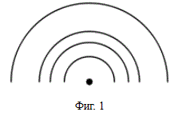

Беседа 2935 от 3877 · Беинса Дуно
Младост и старост
Отче наш.
Имате ли зададена тема? – /Имаме две./ – Какви са? – /„Най-малкият орган на човешкото тяло“ и „Ползата от големите и малките неща“./
Кое се нарича „малко“? Малък човек и голям човек, казваме. Ако ви попитат къде седят причините за промените на времето, причините за зимата, лятото, пролетта, есента? Кои са причините за годишните времена? Коя е причината за студа или коя е причината за топлината? Разбира се, не да се обяснява топлината. Топлината внася едно чувствуване на някаква промяна. Ние виждаме нещо да е станало. Но туй, което чувствуваме да е станало като топлина, ние виждаме и промяната, но тази промяна ни най-малко не показва онова, което ние чувствуваме. Ние правим един паралел. Казваме: „Снеговете се топят, цветята растат, цъфтят.“ Но цветето не значи, че то е топлина. Но има един паралел, едно отношение. Или, да кажем, кажеш, че си радостен, или че си скърбен. Каква е разликата между самочувствието на радостта или скръбта? Вие не сте се спирали да мислите какво нещо е самочувствието на радостта и самочувствието на скръбта. Казвате: „Скърбен съм.“ Или казвате: „Тежък товар имам.“ Но тежкият товар, това е едно самочувствие. Ти го чувствуваш в себе си. Ти чувствуваш един товар, имаш самочувство, че носиш нещо на гърба си. Сега, ако кажем, аз туря едно кило тежест на гърба ви, ще имате едно чувство. Турям единица килограм. Вие имате едно самочувство. Какво е вашето самочувствие? – Имате самочувствие единица. Туря два килограма на гърба ви. Имате самочувствието на двата килограма. Увеличавам, четири, пет, десет килограма, най-после турям 50, 60, 70 килограма. Ако разбирате отношението на килограмите, вие сами можете да премахнете мъчнотиите от вашия гръб. Казвате: „Кой ще ме освободи от този товар?“ Представете си, че вие турите един килограм, два, три и след туй забравите, мислите, че вие не сте господар на положението, казвате: „Не мога да го нося.“ Добре, какво можеш да правиш, ако не можеш да носиш товара? Ти какво трябва да правиш, не можеш да се справиш. Този товар по закона на необходимостта трябва да го пренесеш, казваш: „Не може да го нося.“ Тогава ти извадиш един килограм, 2, 3, 4, 5, 10, 20 изваждаш, докато можеш да го пренесеш. После пак ще се върнеш, да пренесеш другия. Когато товарът е тежък, ще удължиш времето. Когато товарът е лек, ще съкратиш времето.
Сега казвам, че всичките ви мъчнотии вие сами ги създадохте. Вие ги създадохте, вие ги родихте, вие ги отхранихте и те ви мъчат. Вашите радости вие ги родихте, вие ги отхранихте и те ви радват. Скърбите и страданията вие ги родихте. Казвам: Не че вие ги родихте, защото не може да се каже, че вие раждате скърбите, но вие създадохте скръбта. Вие вземете с един чук, ударете на пръста си отгоре. Кой е причината на това страдание? Вземете чука, че ударите пръста си. Или някой път случва се, че вие набивате гвоздей, пък ударите на пръста си отгоре. Кой е причината? След като се върнете, казвате: „Виж този дявол.“ Кой е в дадения случай дяволът? – Умът. Толкоз близко не дръжте чука. Най-малко една педя далеч. Вие сте влезли в една зона, дето чукът може да се сложи на вашия пръст. Сега вие казвате, че страдате в света. На всичките ви страдания причината сте вие.
Да допуснем, че вие сте турили захар в една торба. Носите тази торба. Времето са заоблачава, завалява дъжд, накваси торбата, стопи се захарта. Кой е причината на това? Вие сте причината. Какво трябва да правим? Трябваше да турите тази захар в една торба, в която водата да не може да проникне. Умен трябва да бъдете. Вие туряте часовника в джоба си, но джобът има една малка дупка. Казвате: „Часовникът не може да падне.“ Случва се, че като вървите, този часовник мърда повече, скосва конците около дупката, става по-голяма и един ден бъркате, няма часовника. Кой е причината? Причината сте вие. Малката дупка не я закърпихте, казахте: „През малката дупка не може да излезе.“ Щом има дупка, часовникът може да излезе навън. Часовникът какво показва? Туй, които се движи, показва часовник. Туй, което се движи, навсякъде може да мине. Представете си, че вие може да турите вода в един съд, който има една малка дупчица, може само игла да е минала, като турите водата, през дупчицата ще излезе. Следователно трябва да знаете, че туй, което се движи, може отвсякъде да мине. Щом намери първата дупка, ще направи първия опит да излезе навън.
Добре, да допуснем, че вие изгубите една английска лира през дупката на джоба. Вие скърбите. Щом скърбите, аз вече правя един друг извод. Ти казваш: „Аз парите не обичам. Пет пари не давам.“ А щом изгубите една английска лира, вие скърбите, че лирата излязла от джоба ви. Значи, вие обичате тази парица. Защото не може да скърбиш за нещо, което не обичаш. Щом скърбиш за парите си, ти ги обичаш. Ти казваш, че не обичаш парите, че не се радваш на тях. Намериш една английска лира и ти причини радост. Вие сега казвате: „Аз обичам свободата, аз искам да бъда свободен.“ Нали вие твърдите, че свободни трябва да бъдем? Тогава защо не се радвате на лирата, която излязла от джоба да бъде свободна. И защо като излезе от джоба, от твоя затвор на джоба, ти скърбиш? Защо се радваш, като я туриш в затвора, в джоба? Какви са съображенията? Някой път вие затваряте вашите идеи. Те са затворени, идеите ви скърбят. Някой път идеите ви излизат навън, те се радват, пък вие скърбите. Питам сега: Кое по-хубаво да бъде – английската лира да бъде в джоба ви или да излезе из джоба навън, в дадения случай? Понеже вие не сте били способни да я накарате да ходи, тя е проходила сама. Защото тази английска лира, вие имате право да я държите в джоба един ден, втория ден ще излезе навън. В природата само един ден имате право да я държите. Такъв е законът. От изгрева на слънцето до залеза имате право да я носите в джоба. През него ден трябва да влезете в някоя бакалница или в някой часовникар да ѝ намерите работа. Тя иска да излезе, да види белия свят. Тя иска да излезе из джоба, да я покажете, да се засмеят хората, да я помилват, да я погалят. Ще влезете в един магазин, искате нещо, кажат: „Няма.“ Вие пак я турите в джоба. Иска да я турите на работа.
Какво заключение ще извадите? Ти имаш известна идея, ти имаш право само един ден да я държиш в джоба си, в сърцето си. Се таки тази идея може да излезе най-малко да я поразходиш. Идеята е жива, трябва да излезе, да ѝ дадете право. Да не кажете: „Аз изгубих идеята си.“ Идеята не може да се изгуби. Идеята може да иде на гости някъде другаде, а щом една идея не може да намери симпатия, съчувствие в тебе или че не я оценяваш, тя ще офейка от тебе. Всяка идея търси един, който да я обича. Ако имаш една идея и хората я обичат, тя ще иде при тях. Ако искаш да я задържиш, ти трябва да обичаш. Тя може да ходи при другите и пак ще дойде при тебе. Запример, ако имате някое добиче, някое животно и го храните хубаво, то може да иде в другите къщи, но вечер, понеже знае, че вие го обичате, връща се при вас. Вечерта вие да бъдете напълно уверен, че ще се върне в къщи. Така са и идеите. Те са вашите овчици, които ако ги не обичате, те (не) ще се върнат при вас. Аз наричам сиромах човек всеки, който е без идея. Той сиромах, няма добиче. Идеята е туй, което помага. Един човек, който няма една кравица, едно конче, който няма поне една овчица, една козица, който няма жито, поне 10–20 зърна, който няма ябълки, няма круши, той е сиромах. Аз може да живея тъй. Природата обича нещата да влизат и да излизат. Природата не обича застоял живот. Поемеш въздуха, задържиш го няколко секунди и пак навън. Отвориш очите, светлината влиза. Всичко при човека влиза и излиза. Мисълта влиза и излиза, чувството влиза и излиза. Всичко е в едно хармонично движение. Мисълта е едно хармонично движение в света, без някакво сътресение, сблъскване.
Та казвам: По какво се отличава младият човек и старият човек? М.С. Младият винаги е малък, старият е винаги голям. Младият е семка, старият човек е дърво. Младият човек е цвят, старият човек е плод. Старият умира, младият оживява. Там, дето старият умира, младият оживява. Там, дето младият оживява, там старият остарява. А там, дето старият остарява, младият се подмладява. Конкретно нещо какво е младостта и старостта. Следователно вие не можете да се избавите от младостта. Младостта е едно качество и старостта е едно качество. Вие нито от младостта може да се избавите, нито от старостта. То е смешно. Вие искате винаги да бъдете млади. Ако бъдете само един цвят, не станете на плод, да завържете една семка, какъв ще бъде вашият живот? Един цвят, който окапва, безплоден цвят. Младият, който не може да остарее, е един безплоден цвят.
Питам: Тогава де е смисълът? Аз ви давам сега същинският смисъл в природата, какви са законите. Младият е началото на нещата, старият е краят на нещата. Следователно, ти като млад ще имаш начало на живота, старият е краят на живота. Вие казвате: „Старият е глупак.“ Щом старите са глупци, тогава и младите са глупци. Старият казва на младия, че е глупак. Тогава и старият, и младият са глупци, и старите са глупци, и младите са глупци. Тогава имаме друго равенство. Младият и старият са мъдреци. И старият, и младият, и двамата са мъдреци. Какъвто е младият, такъв е и старият. Какъвто е старият, такъв е и младият. Аз ви слушам понякой път вие казвате: „Той е стар човек, глупак.“ Щом кажеш на стария човек (че) е глупак, и ти си подобен нему. Тя казва: „Стара баба.“ И ти ще бъдеш като нея стара баба. И ти ще бъдеш като нея стара баба, глупачка. И ти ще бъдеш същата.
Казвам сега: Трябва да различавате. Вие туряте на нещата тия качества, които ги нямат. Хубаво е понякой път човек да бъде глупак. Хубаво е понякой път човек да бъде мъдър. Но при какви условия? Та не е ли хубаво да бъдеш глупав, да не знаеш как да направиш злото, може да направиш и доброто. Тогава в началото като мъдър ще направиш злото и като мъдър ще поправиш злото. Умен си, направиш зло, умен си да го поправиш. Понякой път трябва да бъдеш глупав да не можеш да направиш зло, но няма да може и да го поправиш. Мъдростта е в сравнение с глупостта. Извън глупостта, мъдростта сама по себе си какво е? Кои хора ние наричаме мъдри? Аз наричам мъдри всички ония, които знаят как да изправят своите погрешки. За мене те са мъдри хора. Всеки, който може да изправи една своя погрешка, е мъдър човек. Всеки човек, който не може да изправи една своя погрешка, е глупак. Ето конкретно какво е мъдър и какво е глупав човек. Такова трябва да бъде заключението. Казвате: „Природата така направила нещата.“ Природата прави лоши работи в живота, но постоянно поправя. Природата щом направи някоя погрешка, веднага я поправя. Щом те заболи коремът, дал си храна, която не подхожда. Казваш: „Тази природа как е направила.“ Тя веднага ще ти покаже какво трябва да направиш. Природата ще ти каже: Изхвърли го навън от себе си, не може да живееш с него. Това, което е влязло в дома ти, е негодно, изпъди го да си върви. Щом нещо те безпокои, кажи: „Навън по света да си върви.“ Вие имате една лоша мисъл, казвате, какво да правите с нея? – Изпъдете я. Ама как да я изпъдите? Аз да ви кажа как ще я изпъдите. Тъй, както Аврам изпъди един от синовете си. Вие знаете причината. Той имаше една много красива жена, която се наричаше Сара и втора – Агар. Един ден, понеже Сара нямаше деца, казва: Да направя едно добро и даде слугинята си да стане жена на мъжа ѝ, да му роди син, дано Бог като благослови слугинята ѝ, да даде и на нея благословение. Господ да даде благословение на слугинята и после да даде благословение и на Сара. Един ден като порастна синът на слугинята, стана 20-годишен, тя не можеше да го търпи, казва на Аврама: Син ѝ да се махне. Нему стана тъжно на сърцето. Господ казва: Послушай жена си, изпъди го. Той тури хляб в торбата им, даде сина и изпъди слугинята да си замине. Казвам: Като дойде една идея, която ви безпокои, турете нещо в торбата със сина и изпратете я навън, както Аврам направи, да иде да намери своето място. Те като излязоха, изядоха хляба, Агар нямаше какво да прави, обезсърчи се, обърна се към Господа. Тогава се яви един ангел и казва: Не се обезсърчавай, тази работа ще се оправи.
Казвам: Всички трябва да имате едно дълбоко разбиране в себе си. Поправяйте вашите погрешки. Не задържайте вашите погрешки дълго време. Изпратете ги на работа. Щом направите една погрешка, торбата на гърба, изпратете тази погрешка в света да иде да се учи. Всичката ви погрешка на вас е тази, че тъй не изпращате вашите погрешки. Всичките хора, дето умират засега, умират по единствената причина, че не са се подмладили. Всички вие ще остареете, ако не се подмладите. Ако на свят не остареете, ще умрете. Сега да обясня идеята. Старият е семка. Тази семка, за да се подмлади, непременно трябва да влезе в земята, в почвата. Туй семе трябва да умре. Посятото семе е старият, който умира. Младият, който се ражда, е старият, който се подмладил. Следователно, ти сам трябва да станеш на дърво. Казвате: „Това е един дървеняк.“ Че вие не разбирате какво нещо е дървото. Дървеняк значи един човек, който има възможност да остарее и да се развива. Казва: „Голям дървеняк.“ – Разбира се, първостепенен дървеняк съм, значи признавам, че имам всичките условия да се развивам. Казва: „Дървеняк, дебела глава.“ Дебелата глава може да расте. Ти къде можеш да чукаш житото – в дебелата ли чутура или в тънката? Казва: „Много му е дебела главата.“ Не е въпросът там, в дебелата глава. Ако ти пътуваш в един свят на големи противоречия, не е ли безопасно мозъкът да е турен в дебела глава, че който и да те удари, да не смачка мозъка? Ако твоята глава е тънка, навсякъде ще бъде смачкана. Казвам: Умният, при известни условия, главата му става тънка. На младите хора главите са тънки, на старите хора главите са дебели. Щом (е) дебелоглав, той е стар. Щом е тънкоглав, той е млад. Ами че тази семка на една слива, как мислите, тънка ли е? Сега едно противоречие ще изнеса. Противоречието е в това, че костилката на сливата е много дебела, затворен е мозъкът, затворен е животът в една много дебела обвивка. Ако вземете семката на ябълката, на крушата, там обвивката не е така дебела. Защо е така? – Сливата е стара вече. Ябълката е млада. Сега ще попитате: „Защо с тънките кори да са млади, а с дебелите да са стари?“ Питам: Кои хора са по-силни, тънките или дебелите? По какво се отличава якотата на човека? Кои растения са по-силни, дебелокорите или тънкокорите? – Дебелокорите, разбира се.
Когато човек започне да мисли, главата изтънява. Има един начин за изследване способностите. Всякога мисълта е, която изтънява черепа. Щом черепът на една глава (е) дебел, показва, че този човек не е мислил. Той имал едно малко чувствувание, много обикновен живот имал. Ако разгледате една глава на един умрял човек, турите вечер една свещ в кухия череп, ще видите, че с които центрове на мозъка е работил, тази част на черепа е тънка. Защото всеки един център като работи, от него излиза електричество и на тия места черепът е изтънял, черепът там е по-светъл, по-тънък. Дето мозъчните центрове не са работили, там черепът е дебел.
Тогава казваме: Ако на младия черепът е тънък, това показва в органическия живот, че ред поколения са мислили, детайлността на мозъка била развита на 10–20 поколения и главата изтъняла. Ако 10–20 поколения не са работили, главата останала дебела. Когато кажем, че черепът е дебел, разбираме, че ред поколения не са мислили, живели обикновен живот. Когато намерим, че костта на черепа е тънка, разбираме, че ред поколения, 5, 10, 20 поколения са живяли интензивен живот. Този закон е верен. Ако един човек е живял един интензивен умствен живот, не само той, но и ред поколения са живяли така, тогава костите на ръцете, на краката, кожата, всичко е добре моделирано, те са живяли много добре в миналото, кожата е много гладка, мека, костите са много добре оформени, гладки са, полирани, имат много хубав, приятен цвят. Главата е добре оформена, тънка. Животът е, който оформява външните форми. Съзнателният живот дава едни форми, самосъзнателният дава други форми. Свръхсъзнателният дава други форми, подсъзнателният дава едни, съзнателният – други, самосъзнателният – трети, свръхсъзнателният – четвърти. Най-красиви са формите на свръхсъзнателния живот. Казвам: Съзнателният живот в животните създал главите на сегашните животни. Подсъзнателният живот създал главите на растенията. Растенията, както са създадени, подсъзнанието е създало това в тях. Онзи път, през който растенията минават, условията там са много тежки. В тази форма, в която сега се намират растенията, то е най-доброто за техния растеж.
Казвам сега: За да се измени вашата глава, трябва да измените вашето съзнание. Ако сте в подсъзнанието, ще имате дървени глави. Ако сте в съзнанието, ще имате животински глави. Ако сте в самосъзнанието, ще имате човешки глави. Ако сте в свръхсъзнанието, ще имате светийски глави, или главите, които ангелите имат. Те понякой път, както човек и да изменя себе си, от степените на съзнанието ще измени и цялата външна форма на тялото. Ако не разбирате този закон, във вас еволюция не може да има. Под думата „еволюция“ разбирам онези красиви форми, които трябва да се заменят една с друга. Да минем от животинското царство в растителното, в животинското, в човешкото и в ангелското. През тия четири царства трябва да преминем. Едновременно трябва да функционират във вашето съзнание и да знаете като мислите, какво може да произведете. Запример, някой път вие искате да станете умен човек. Че да станеш умен човек, трябва да дойдеш в самосъзнанието и да започнеш да виждаш не само своите погрешки, но да виждаш погрешките на 100, 200, на хиляда поколения. Да съзнаваш техните погрешки и добродетели, че да използуваш добродетелите, които са имали, да използуваш техните погрешки. То е вече умен човек, който може да оправя погрешките на своите прадеди и да използува техните добродетели. Само да се възмущаваш от миналото, от погрешките на своите прадеди и да съжаляваш, че не са оставили нещо добро, което можеш да използуваш, то е неразбиране на този закон. Понеже дедите, колкото престъпления са направили, толкова и добродетели са имали. Имате плюс и минус, какво дават? Плюс и минус дават нула. Две еднакви, противоположни величини дават нула, уравновесяват се. Имаш един лев в джоба си, имаш да даваш един лев, какво остава в джоба? – Нула остава. Но отивам по-далеч. Туй, което в математиката е плюс и минус, превождам нулата. Казват, че нулата е нищо. Който знае, нулата създава възможности за всички чудесии. Нулата е семката, която като посееш от туй нищо, от костилката, която е нищо, ще излезе цяло дърво. После, ако турите нулата след единицата, какво става? Вие казвате, че нулата е нищо, пък как е възможно туй, което е нищо всъщност, като го турите подир единицата, да я увеличи десет пъти? Как е възможно туй, което е нищо, да съдържа бръмбарът, чуваме само бръмченето. Като чуете бръмченето на един аероплан, казвате: „Бръмбар.“ Бръмбар ли е този аероплан? Това е един философ, който прави наблюдения, научни изследвания, работи, прави фотографии, научно работи. Като се върне, прави доклад. Пътува 400–500 килметра в час. Пренася пътници, връща се. Какво работи вътре бръмбарът? Като пътуват хората с бръмбара, вървят по-бързо, отколкото с треновете. Под думата „нищо“ разбираме, че нищо е туй, което не се изменя. Нещо, което не се изменя в себе си, казваме, че е нищо. Някой път има сиромашия, казва: „Няма нищо.“ Щом ти кажеш, че няма нищо, ти трябва да разбираш, че нищото, то не е изгубено. Нищото не може да се изгуби. Нещото ти може да го изгубиш. Нищото не можеш да го изгубиш. Нищото не може и да умре. Казваш: „Изгубих си парите.“ – Няма нищо. Ще ви приведа един пример. Твоите пари не са се изгубили. Те са при тебе, те не са умрели. Казваш: „Умря баща му.“ Казвам: Няма нищо. Искам да ти кажа, че баща ти не е умрял. Може да се докаже, че като умре бащата, тежестта на сина ще се увеличи с десет грама. Тежестта на всичките синове и дъщери ще се увеличи. Затуй, когато някой умре в някой дом, подобряват се работите, всички стават здрави. Докато дядото е жив, всички боледуват, като умре дядото, всички стават здрави. Защо стават здрави? – Много естествено, дядото бил толкоз тежък, че дядото мислил само за своята старост, за своето минало, че той тежал върху гърбовете на всички. Мислите на дядото тежат върху умовете на децата и те боледуват. Като умре дядото, не мисли за своите старини, децата се подмладяват. Или, ако турите върху едно семенце един камък, то се изкривява, като падне камъкът, цветето се изправя.
Казвам: Онези идеи във вас, които са стари, трябва да умрат. Кое наричам аз „младост“? Идеята ви трябва да умре, за да се подмлади. Или най-малко една идея, която е във вас, трябва да си замине, трябва да се замени с нова идея. Ако старата идея не се замени с нова или ако старата идея не може да се подмлади, да внесе нещо ново, тогава не разбирате процеса на природата. Вие казвате: „Растем.“ Най-първо вие се радвате до известно време, след туй се почувствувате, че сте остарели. Какво усещате, вие сте остарели? Започвате да усещате, че вашите крака не са пъргави, както по-рано, че вашите очи не са тъй разположени да гледате, малко мрачкаво гледате, ставате инертни, не ви се ходи, като седнете, не искате да станете. После във вас нямате разположение да услужите някому. Като дете вие сте били готови да услужите комуто и да е. Като остареете, ще започнете да заповядвате. Казвате: „Аз съм стар, синко, ти стани.“
Та сега някои от вас, гледам, сте започнали да остарявате. Казвате: „Ти стани, направи тази работа.“ Карате други хора да вършат работите. Вие вършете, за да се подмладите. Видиш една книжка, наведи се, вземи я. Ти ще се подмладиш най-малко с един ден. Пък ако подигнеш десет книжки, десет деня ще се подмладиш. Ако дигнеш сто сухи листа, сто деня ще се подмладиш. Ако всеки ден дигаш по десет листа, с десет деня ще се подмладявате. Знаете ли какво нещо е това, по десет дена да се подмладяваш всеки ден? Подмладяването на един ден, знаете ли каква енергия съдържа? Законът за доброто е закон за подмладяване. Законът за злото е закон за остаряване. Които да остаряват, да правят зло. Които искат да се подмладяват, да правят добро. Сега ви казвам: Законът за доброто е закон за старите. Тогава непременно, ако вие на мене ми кажете тъй: Ти не можеш да направиш доброто, ако не искаш да се подмладиш. Ти не можеш да направиш злото, ако не искаш да остарееш. Значи, вие, които сте почнали да остарявате, правите зло. В какво седи злото? Енергията в злото и в доброто е еднородна. Злото е едно действие, турено не на място. Запример, доброто е да влезеш в един дом и да запалиш огъня на огнището. Не е на място, запример, ако запалиш огъня всред този салон, може да изгори и целият салон. В собата този огън е на място турен, но на дъските отгоре е не на място. Следователно, когато в себе си турим една мисъл не на място, тя е лоша. Всяка една мисъл, която не е на място, е лоша. Ако ти туриш едно чувство в ума си и една мисъл в сърцето си, ти си направил една погрешка. Ако туриш една мисъл в ума си и едно чувство в сърцето си, то е на място. Ако туриш едно чувство да ръководи работите и туриш една мисъл отподире като опашка, да помага на това чувство, ти си направил една погрешка. Ако туриш една мисъл да ръководи и туриш едно чувство да помага, туй чувство е на място. Чувствата трябва да подтикват човека към работа. Когато туриш чувствата да вършат работа, а умът да помага, тогава ти не си от умните. Ти не разбираш Божия закон.
Та най-първо за всяко нещо имайте една мисъл и за да прокарате тази мисъл, трябва да турите една постъпка. Мисъл, чувство, постъпка. Постъпката у мене стимулира едно чувство, чувството стимулира човешката мисъл. Тогава имаме от главата, от мозъка ще излезе известна енергия, ще се възприеме от дробовете, ще дишат, ще слезе в стомаха, ръцете, краката, тялото трябва да се подвижи. Тогава тази мисъл може да се реализира. Когато мозъкът действува, когато дробовете действуват, когато и в ръцете се проявява туй движение, ние вече считаме, че човек е готов да свърши една хубава работа. Когато човек мисли добре, когато чувствува добре и когато ръцете работят добре, мисълта може да се реализира, както ние искаме. Как мислите, колко време трябва на един художник да нарисува една хубава картина? Каква тънка мисъл трябва да има художникът, каква прецизност трябва да има в тия линии, които очертава. Някой път рисува, рисува художникът и излиза карикатура. Някой рисува и излиза една хубава картина, без да зачерква. Една опитност има, много правилни са всичките криви линии. Рисува много хубаво.
В съвременния живот тъй, както всичките списатели пишат, казват: „Човек трябва да бъде добър.“ Най-първо доброто е закон за подмладяване. Ако правиш зло, злото е закон за остаряване. Следователно, злото е за много малко хора. В света има много малко стари хора. В небето има 24 старци. То не е за всяка уста попара. Казвате: „Остаряхме.“ Не е за вас старостта. За вас може би ще минат няколко хиляди, няколко милиони години, за да остареете. То е един интензивен живот, след няколко милиона години ще имате някои черти на старостта.
Казвам сега: Използувайте закона за подмладяването. Сега сте остарели преждевременно, ще мязате на актьори на сцената, комуто някой път турят известна изкуствена брада. Той е млад човек, но като му турят изкуствена брада, мустаци, турят дълги коси, прегърби се, и той започне да играе ролята на стар човек. Ни най-малко не е стар. Като свърши, хвърли брадата, мустаците, всичко, подмлади се. Нали всичките стари в театъра се подмладяват? Понеже като актьори един–два часа трябва да бъдат стари. Който и да е от вас може да стане стар. Аз може да направя някого от вас стар, пък може и да го подмладя. Понеже се интересувате от младостта, казвам: Не внасяйте в ума си образа на злото, не мислете какво нещо е злото. Този въпрос го оставете настрана. Един от древните мъдреци на Египет го попитали какво нещо е злото. Той си свил устата. Сега всички тук говорите за злото. За злото малко говорете. Свийте си устата. То е един въпрос, за който нищо не казвайте. Кажете една глупава постъпка несъобразна, несъвместима, но не казвайте лошо, зло. Пък не искайте да познаете какво нещо е доброто и злото. Ако познаете злото и доброто, какво ще стане от вас? Ако на една бучка захар налея вода и долу има кал, като се стопи сладката и бяла бучка и падне в калта, какво ще стане? Калта ще стане ли сладка или бяла? – Не. Когато кажеш, че нещо е лошо, ти си турил доброто вътре в калта. Питам: Какво ще излезе от тази кал? Тогава трябва да имаш знанието на грънчаря, тази кал, щом захарта е влязла в калта, да я замесиш и калта да я направиш на стомна или гърне, да я направиш порцеланово гърне. Щом не си грънчар, не туряй калта и захарта в тази кал, понеже ще се окаляш от нея и нищо няма да излезе. Не говори за злото. Ако вие сте грънчар и от калта можете да направите някое гърне, може да кажеш нещо, но щом не сте грънчар, кал не правете.
Сега да дойдем до съществената мисъл, която е необходима за вас. Едно здравословно състояние в човешкия организъм се поддържа само с доброто. А пък от злото, ако сте умен, понякога е необходимо да направите по една хомеопатическа доза. Представете си, че аз вземам един грам захар, разтопявам я в един килограм вода. От туй кило взема една капка, че я туря в друго кило вода. Взема една капка, че я туря в друго кило и така имам тридесет такива деления. Взема една капка от тридесетото деление и направя едно лекарство, че като дам на болния, той оздравява. Понякой път хомеопатически във водата на доброто ще турите една капка от злото, вече лечебно действува в този случай. Злото лекува света и злото лекува човека. И от злото човек поумнява. Ако е много силна доза, ще го умъртви. Ще турите много малко. Без злото не може в света. Само че Ева изяде целия плод, много голяма доза. Погрешката на Ева е, че не взе една капка от тридесетото деление, но взе много голяма доза.
Та казвам: Дръжте доброто като една мощна сила в света, която подмладява човешката мисъл, човешките чувства и човешките постъпки. Доброто е, което държи човешкото тяло в туй състояние. Ако доброто не е в света, той ще се разложи на своите части. Той ще се пукне и нищо няма да излезе. Благодарение на доброто, което ви държи. Вие под този напор на доброто растете и се развивате, имате благоприятни лъчи на Божественото Слънце. Бъдете внимателни да не образувате вашето недоволство в себе си, което имате, този калпак, че Божествената светлина не може да влиза. Дръжте доброто като една стъклена стая, в която имате всички най-хубави условия. Да гледате стаята ви да бъде чиста, значи умът да бъде чист, сърцето и постъпките чисти, за да може Божествената светлина да влезе във вас, тя ще ви научи как да гледате. Не се изисква голяма сила. Туй разбира законът на вярата, че с вяра всичко може. Ние да не препятствуваме на Божествения закон, който работи в нас. Онова дете, което расте, какви усилия прави? Ако едно дете започне да мисли за своето растене, растенето спира в него. Може да направите един опит. Има деца, които се мерят, колко израстват. Като започнат да се мерят, растенето престава. Ако ние се оставим в Божествения процес в света, Божественото да работи, по-лесно ще се постигне работата, отколкото когато се безпокоим.
Кажете ми сега какво разбрахте? Как бихте приложили доброто? Или да ви дам една тема: По кой начин човек може да се подмлади? Пращам ви да държите лекция за подмладяването. Как бихте поставили въпроса? Щом влезете в доброто, то е една цяла лаборатория. Ще изучавате света от гледището на доброто на всички елементи, ще знаете техните качества, как се съединяват и как се разединяват. Манипулацията с доброто е цяла наука. Вие имате много обикновено схващане за доброто. То е цяла лаборатория. Като влезете в доброто вътре, ще влезете във връзка с всички разумни същества, ще започнеш да вземаш уроци от тях. Те ще те учат как да правиш работите, за да се подмладиш. По какво искаш да се подмладиш, какъв искаш да станеш, учен ли искаш да станеш, философ ли искаш да станеш, поет ли искаш да станеш или какъв искаш да станеш? Младият поет, младият художник, те се отличават. По какво се отличава един млад поет от един млад философ? Младият поет ще бъде като една млада пеперуда, която ще ходи от цвят на цвят. Младият философ ще ходи да огледа къде влиза и къде излиза, какво прави. Поетът описва работите, философът търси причините, подбужденията. Той ходи да гледа как влиза, как излиза, къде ходи и какво прави, философски наблюдава. Един млад поет другояче ще постъпи. И двамата вървят. Работата не е една и съща на поета и на философа. Ако младият готвач, този, който иска да готви, влезе в един цвят, той оттук ще вземе, от там ще вземе, ще набере от цветята. Философът ще наблюдава какво прави поетът. Поетът ще влиза и ще излиза и ще наблюдава цветята. Готвачът ще вземе по нещо от цветята, ще направи нещо. Или тия готвачи вие как ги наричате? – Прозаисти, материалисти. Младият готвач материалист е. Казвам: Животът тогава взема една красива форма. В доброто има всичко. Ти ще научиш техните качества, които притежаваш в себе си какви са и ще имаш една ясна представа. Та най-първо вие сега трябва да имате едно чувство на благодарност. Бог, Който ви пратил в света, да Му благодарите, че ви изпратил в едно училище да учите. Вие преждевременно искате да станете професори. Вие искате преждевременно богати да станете. Вие преждевременно искате силни да станете. Богатството е една голяма тежест. Трябва да бъдете голям параход, за да носите тежестта на богатството. Богатството силно напрежение има. Ще мязате на един голям котел, голяма енергия насъбрана, трябва да я употребите. Ако не знаете как да употребите тази енергия, какво ще правите?
Тогава казвам: Радвайте се. Когато четете един поет, радвайте се на неговата поезия. Когато четете един философ, радвайте се на неговата философия. Когато срещнете един готвач, който знае да готви, радвайте се на онова, което готви. На един художник, на един инженер, на един музикант, радвайте се. Всеки един съдържа една скрита разумна енергия, която природата е вложила във всяко едно същество, понеже тя иска всички нейни дела да бъдат завършени. Следователно, участвувайте вие в делата на природата. Радвайте се на онова, което тя твори и се учете от нея. Не искайте преждевременно да заместите природата в себе си и да останете на нейно място. Когато я заместите, вие остарявате. Всичките хора, които са остарели, те са заместили природата. Не замествайте природата, оставете я да работи във вас и вие се учете от нея, ако искате млади да бъдете. Не замествайте природата с нищо. Оставете я тя сама да работи. Вижте колко хиляди години тя е живяла. Знаете колко стара е тя? Не зная, много стара е. При тази голяма старост, която тя има, тя е по-млада от вас, по-пъргава. По разбиране по-млада е от вас. Природата нищо не ѝ струва да си поиграе с вас. Тя ще вдигне шапката ви, ще се посмее, после размърда палтото му. Ти започваш да мислиш да не би да го вземе. Тя си играе, да се посмее с тия дечурлига. Казва: И аз съм такова дете, макар че съм стара, дете съм. Тя ни най-малко не мисли, че е стара. Ако вие изучавате природата, ще изучите нещо хубаво от нея: Тя никога не остарява, тя никога не отслабва, никога не се обезсърчава, никога нейната любов не се изменя. Тъй разбирам природата. Тъй, като се изменя, остава неизменена. И туй, което се движи, остава едно и също в нея.
Като станете, не мислете, че сте остарели. Вие се погледнете в огледалото и казвате: „Остаряхме.“ Вие си давате една титла, която е много висока. Вие едва сте 30–40 години на земята и мислите, че сте остарели. Природата вече милиарди и милиарди години живее и още не е остаряла. А пък вие 30 години сте живели и сте остарели. Представете си, че сте млади. Защото светът е създаден за младите. Всичко в света, което се учи, е младо. Старите хора в света са Божествени съкровищници. Старите хора са съкровищници на Божествените придобивки. Светът е създаден за младите. Ако не станете като малките деца, не може да влезете в Царството Небесно. Като малки деца, които трябва да се учите. Всякога трябва да пазите младостта и тя е едно Божествено качество за учение. Не мислете за старостта. Когато някой път се видите, че сте остарели, кажете: „Ние остаряхме, за да се подмладим отново. Вторият път ще бъдем по-млади, отколкото първия път.“ Ако вие всяка вечер, когато си лягате, кажете: „Аз утре ще се подмладя“, на втория ден кажеш: „Аз утре ще се подмладя“, на третия ден кажеш: „Аз утре ще се подмладя“, какво ще изгубиш? – Нищо няма да изгубите, ще спечелите. Вие легнете вечерно време, казвате: „Остаряхме.“ Мине една година, втора, трета, четвърта, 5, 10, 25, 40, 50, 60 години, остаряхме, 90 години, вече за другия свят се готвите. Другият свят, за който вие се готвите, е свят за подмладяване. Като идете в оня свят, ще видите все хора стари, които седят и чакат да ви приемат. Всичките стари дядовци с брадите като хванат и хайде в ретортата. Той помънка малко, погледнеш, на земята изскочил едно детенце, подмладил се. Като идете в онзи свят стари, в ретортата вътре ще влезете. Като излезете като филтрирана вода, чиста, свободни от всичката кал, която сте имали. Защото в ума има кал, известни мисли, които не са прави, има кал в тях. Известни чувства, които не са прави, кал има в тях. От всичката кал като ви освободят, ще се подмладите, ще започнете да дишате отново. Не чакайте сега да умрете, че тогава да тикат в ретортата. Малко неприятно е, защото те не се церемонят, няма да ти дадат почит. Умрелите старци като идат в оня свят, ще дойдат някои от работниците, хванат ви и в ретортата. Както и да протестирате, ни глас, ни слушание, всички в ретортата. Навън ще излезете подменен.
Сега вие имате високо мнение за себе си. Казвате: „Какво е туй страдание, на нас ли ни се даде?“ Ще намерите ретортата. Никакво роптание. Ако идете в оня свят, какво ще кажете? Представете си, че като идете в оня свят, питат ви: „Защо дойдохте, какво обичате? На екскурзия ли сте дошли?“ – Какво ще им кажете? Ако кажете: „Бягаме от оня свят, остаряхме от страдания“, в ретортата вътре ще се намерите. Сега вие имате едно понятие за оня свят, но той е разумен свят. Влизаш в оня свят с една светла мисъл, с едно светло сърце, той е друг свят. Влизаш в оня свят недоволен, вие се намирате в един хаос, дето Духът Божи започва да се движи около вас. „Направи Бог небето и земята и земята беше неустроена и Дух Божи се носеше над земята.“ Ако вие влезете в оня свят неустроени, ще започне оня Дух да се движи, ще започне творчество. Започнете вие сега сами да творите в себе си.
Най-първо, да имате едно благодарно сърце. И като пострадате, да се радвате, че сте се удостоили, че природата обърнала внимание. Като пострадаш, ще считаш голяма привилегия. Не е ли привилегия онзи скулптор, майстор, да дойде със своя чук и да чука, да удря, да извае една хубава статуя, която да се тури за пример. Колко е хубаво да те очукат и да бъдеш красив, отколкото един камък безформен, никаква форма да нямаш и да бъдеш в своята примитивна форма. Страданията в света, това са чукът, който чука да извае нещо от вас. И благодарение на тия страдания, гледам, че се оформяват главите ви. Като погледна, виждам чукът как играе. Природата е един отличен скулптор, художник, във всеки живот очуква. Някъде веждите поправя, някъде носа поправя, очите, скулите поправя, ръцете, пръстите, гърдите, всичко поправя.
Казвам: Ще имаме едно отлично мнение за природата. Тя има всичкото добро желание да ви помогне, ако я слушате. Щом не слушате, понякой път тя започва да си прави оглушки. Нали сте забелязали в училището, когато ученикът не е способен или поведението не е на място, не се учи добре, като мине, учителят даже не подига погледа. Ако ученикът е един от даровитите, от способните, поздравлява. Значи, учителят хубаво поздравлява онзи, който се учи. На другия казва: „Ти какво си дошъл?“ Природата също така постъпва. На онези, способните ученици, като минат, тя обръща внимание. На другите ще каже: „Защо си дошъл в училището?“ Казва: „Много криво ме погледна.“ Всеки учител гледа криво учениците, които не учат. Природата изисква всички да бъдете прилежни, да благодарите за онова, което ви е дала, което никой досега не е дал.
Доброто е закон за подмладяване, злото е закон за остаряване. Злото прави хората мъдри. Онези, които минали школата на доброто, минават школата на злото. Той ще стане мъдрец, той влада тялото. Първо минава школата на доброто, после да дойде да изучава закона на злото. Злото, и то си има свои закони. Ако започнете най-първо със злото, ще обърнете целия този процес в обратен смисъл. Някои хора в света има, които започват със злото.

Само светлият път води към Истината.
В Истината е скрит животът!
Светлината води към Истината.
XVIII година.
9 беседа на Младежкия окултен клас,
държана от Учителя на 9 декември 1938 г., петък, 5 ч. с.
София – Изгрев.